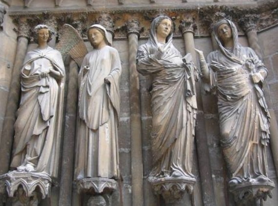
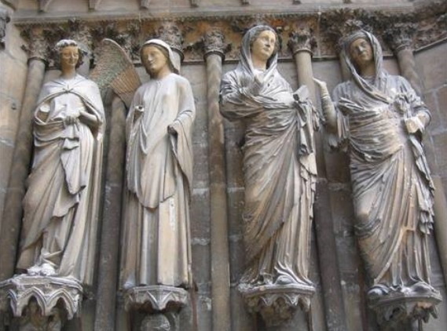
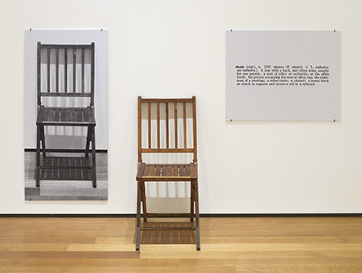

Western Art Trends
Ancient (26 BC - 4th century AD)
In ancient Egypt, figures were drawn in different sizes according to their social status, so the pharaoh, a living god, was relatively larger than other figures. And the statues of ancient Greek art were lively and pursued the ideal beauty of perfect proportions and balance.
Middle Ages (4th - 14th centuries)
The reason why the roof of Milan Cathedral rises sharply is to show the faith of medieval people who tried to get closer to God. And as the Middle Ages changed into a God-centered society, art also began to pursue religious ideals. So, during this period, the production of paintings and sculptures related to religion as well as architecture was active.


 

Modern (18th - 20th century)

Compared to the Middle Ages, the modern era is different in that it revived the artistic ideals of Greco-Roman culture and expressed humans and nature more realistically and ideally. In addition, people were expressed dynamically by using strong colors and light-dark contrast. During this period, aristocrat-centered art was developed, and many colorful, elegant, and decorative works were produced.
Contemporary Art (20th century~)
Compared to the Middle Ages, the modern era is different in that it revived the artistic ideals of Greco-Roman culture and expressed humans and nature more realistically and ideally. In addition, people were expressed dynamically by using strong colors and light-dark contrast. During this period, aristocrat-centered art was developed, and many colorful, elegant, and decorative works were produced.
